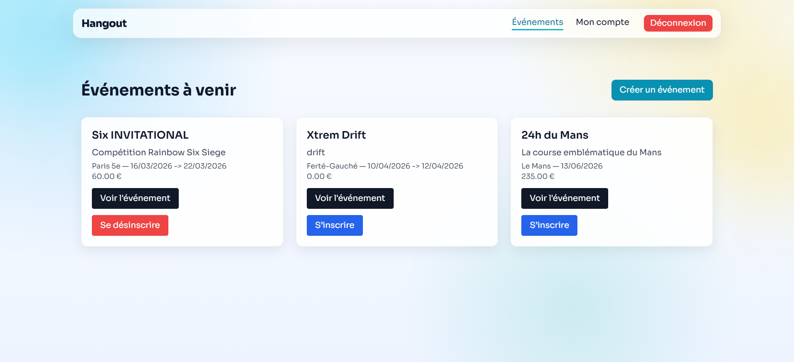
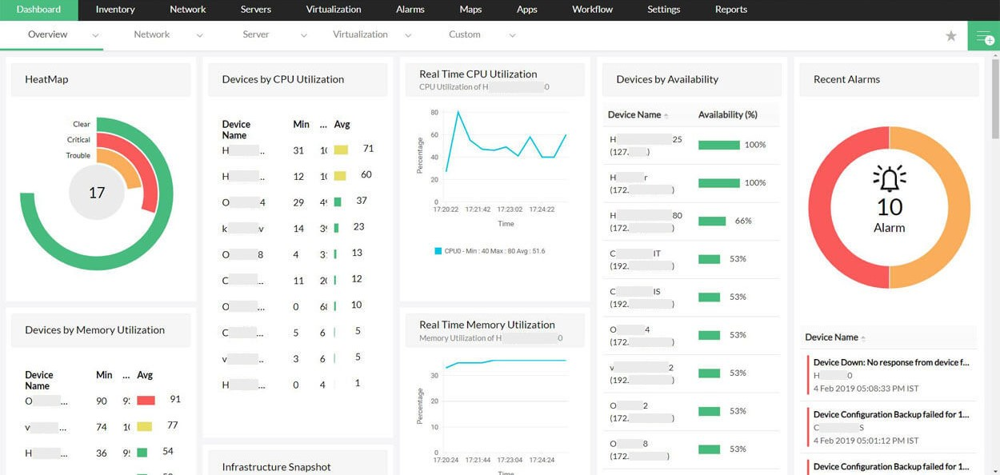

DÉVELOPPEUR WEB · BTS SIO SLAM · ALTERNANCE AXA FRANCE
Développeur junior passionné.
Je suis Nassim, développeur junior en BTS SIO SLAM. J'aime transformer des idées en applications web simples, propres et utiles, avec une vraie attention portée à l'expérience utilisateur et à la qualité du code.
2026
JAVASCRIPTVITEREACTNODE.JSEXPRESSSQLAPI RESTGITBTS SIO
JAVASCRIPTVITEREACTNODE.JSEXPRESSSQLAPI RESTGITBTS SIO
À propos
Je m'appelle Nassim Mezoughi. Je prépare un BTS SIO (Services Informatiques aux Organisations), un diplôme qui se décline en deux options : SISR (Solutions d'Infrastructure, Systèmes et Réseaux), orientée administration réseau et systèmes, et SLAM (Solutions Logicielles et Applications Métiers), orientée développement logiciel et web. J'ai choisi l'option SLAM.
React / React Native
Node.js / Express
SQL / Modélisation
Documentation technique
Projets
01
Plateforme de gestion d'événements

Application complète frontend/backend avec gestion des rôles, inscriptions et sécurisation des accès.
REACT · VITE · NODE.JS · EXPRESS · MYSQL · JWT
- Concevoir et développer une solution applicative
- Méthode de travail: Scrum agile (backlog, sprint, daily, revue, rétrospective)
- Gérer les données
- Travailler en mode projet
02
Dashboard de supervision applicative

Tableau de bord pour le suivi de services internes, la lecture d'alertes et la communication d'incidents.
JAVASCRIPT · XML · DYNATRACE · MONITORING
- Mettre à disposition des utilisateurs un service informatique
- Méthode de travail: Scrum agile (backlog, sprint, daily, revue, rétrospective)
- Répondre aux incidents et aux demandes d'assistance et d'évolution
- Organiser son développement professionnel
03
Application mobile de gestion d'événement

Déclinaison mobile du projet événementiel avec navigation tactile et consommation d'API REST.
REACT NATIVE · EXPO · AXIOS · API REST
- Concevoir et développer une solution applicative
- Méthode de travail: Scrum agile (backlog, sprint, daily, revue, rétrospective)
- Mettre à disposition des utilisateurs un service informatique
- Travailler en mode projet
04
Portail documentaire technique
Base documentaire interne pour procédures, guides de résolution et partage des connaissances techniques.
HTML · CSS · JAVASCRIPT · MARKDOWN
- Organiser son développement professionnel
- Méthode de travail: Scrum agile (backlog, sprint, daily, revue, rétrospective)
- Développer la présence en ligne de l'organisation
- Gérer le patrimoine informatique
05
Site vitrine client

Conception d'un site vitrine responsive orienté conversion et contact rapide pour activité locale.
HTML · CSS · JAVASCRIPT · RESPONSIVE
- Assurer la maintenance corrective ou évolutive d'une solution applicative
- Méthode de travail: Scrum agile (backlog, sprint, daily, revue, rétrospective)
- Développer la présence en ligne de l'organisation
- Organiser son développement professionnel
Veille
Veille automobile, IA embarquée et pénalités en course automobile.
Méthodologie
Processus de veille
Je suis trois axes: l'IA embarquée dans l'automobile, les usages de la donnée dans les véhicules connectés et les règles sportives en course automobile.
Je m'appuie sur des sources officielles et spécialisées pour distinguer les innovations réelles des annonces marketing, en gardant un focus sur l'impact technique et réglementaire.
Je synthétise ensuite les sujets utiles: assistance à la conduite, analyse de télémétrie, arbitrage des pénalités et évolution des règles de course.
Tendance
IA et data dans l'automobile
La tendance la plus nette est la montée de l'IA embarquée et de la donnée temps réel dans les véhicules: aide à la conduite, reconnaissance d'objets, optimisation énergétique et analyse de performance en course.
IA embarquée
Télémétrie
ADAS
Règlement sportif
Sources
Sources suivies
Flux RSS
Actualités en temps réel
Chargement des derniers articles...
Article analysé 01
IA de conduite et perception de la route
Cette analyse se concentre sur les systèmes d'aide à la conduite qui utilisent la vision par ordinateur, les capteurs et la fusion de données pour reconnaître les véhicules, les piétons, les marquages et les situations à risque.
- Impact technique: détection d'objets en temps réel, classification des scènes et anticipation des trajectoires.
- Impact projet: besoin de données fiables, de tests sur route et de scénarios variés pour éviter les faux positifs.
- Point de vigilance: sécurité fonctionnelle, responsabilité du constructeur et limites des systèmes d'assistance.
Article analysé 02
Pénalités FIA, track limits et télémétrie
La veille porte ici sur la manière dont la FIA et les équipes de course exploitent la télémétrie, la vidéo embarquée et les limites de piste pour justifier une pénalité ou valider une manœuvre en course.
- Impact technique: croisement entre données de position, images onboard et chronométrage pour trancher un incident.
- Impact projet: compréhension plus fine du règlement sportif et des critères objectifs utilisés par les commissaires.
- Point de vigilance: cohérence des décisions, gestion des cas litigieux et lisibilité des sanctions pour le public.